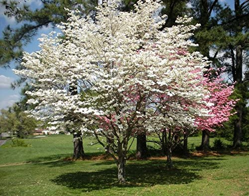

| Trees |
|---|
| Picture |
Common name |
Scientific name |
Height |
Lifespan |
Habitat |
|
Red Maple |
Acer rubrum |
30 m at maturity |
Relatively short at 80 to 100 years |
The U.S. Forest service recognizes it as the most abundant native tree in eastern North America. The red maple ranges from southeastern Manitoba around the Lake of the Woods on the border with Ontario and Minnesota, east to Newfoundland, south to Florida, and southwest to eastern Texas. |
|
Loblolly Pine |
Pinus taeda |
30-35 m |
150-300 years |
From central Texas east to Florida, and north to Delaware and southern New Jersey. |
|
American Sweetgum |
Liquidambar styraciflua |
Up to 46 m, but can be as short at 15 m |
150 years but does not flower or produce seed for the first 15-20 years |
Native to warm temperate areas of eastern North America and tropical montane regions of Mexico and Central America |
|
Douglas Fir |
Pseudotsuga menziesii |
20-100 m |
They usually live no longer than 400 years |
Grows in the coastal regions from west-central British Columbia southward to central California. In Oregon and Washington, its range is continuous from the eastern edge of the Cascades west to the Pacific Coast Ranges and Pacific Ocean |
 |
Quaking Aspen |
Populus tremuloides |
20-25 m |
About 50-60 years usually, with exceptions of 150 years |
Quaking aspen occurs across Canada in all provinces and territories, with the possible exception of Nunavut. In the United States, it can be found as far north as the northern foothills of the Brooks Range in Alaska, where road margins and gravel pads provide islands of well-drained habitat in a region where soils are often waterlogged due to underlying permafrost. It occurs at low elevations as far south as northern Nebraska and central Indiana. |
|
Sugar Maple |
Acer saccharum |
25-35 m |
200 years |
It is native to the hardwood forests of eastern Canada, from Nova Scotia west through southern Quebec, central and southern Ontario to southeastern Manitoba around Lake of the Woods, and the northern parts of the central and northeastern United States, from Minnesota eastward to Massachusetts |
|
Balsam Fir |
Abies balsamea |
14-20 m |
300 years |
Native to most of eastern and central Canada (Newfoundland west to central Alberta) and the northeastern United States (Minnesota east to Maine, and south in the Appalachian Mountains to West Virginia) |
|  |
Flowering Dogwood |
Cornus florida |
4 to 7 m |
80 years |
The various species of dogwood are native throughout much of temperate and boreal Eurasia and North America, with China, Japan, and the southeastern United States being particularly rich in native species. |
|
Lodgepole Pine |
Pinus contorta |
40 to 50 m |
150 to 200 years |
Western North America. It is common near the ocean shore and in dry montane forests to the subalpine, but is rare in lowland rain forests.[ |
|
White Oak |
Quercus alba |
24-30 m |
Can be over 450 years old |
Native to eastern and central North America and found from Minnesota, Ontario, Quebec, and southern Maine south as far as northern Florida and eastern Texas |